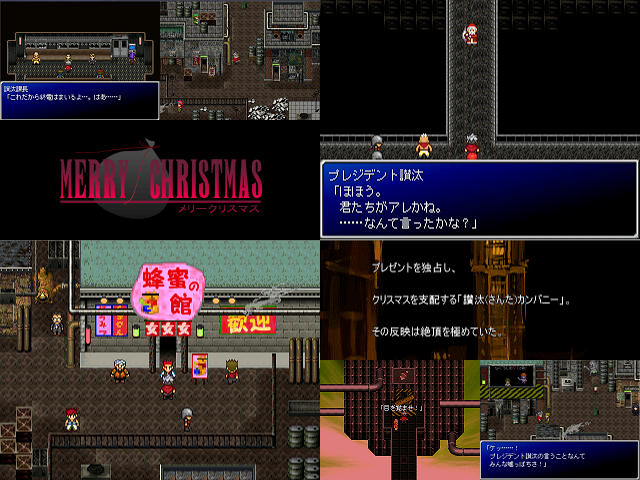

| No,042 【Merry Christmas -メリークリスマス-】 |
| ダウンロード（8.86MB） 修正ファイル（6.29KB） 2006/12/29 11:40 |
 |
| 【ＨＮ】 滋賀のサンタ 【コメント】 私、サンタクロースは袋の中身を狙われています。 なぜ、誰に、袋の中身を狙われているかはわかりません。 ただひとつ判る事は、キリスト様の誕生日と関係があると言う事です。 煙突と靴下はトラップの一種。 他にも子供が４～５人以上。 赤い鼻のトナカイを所有。 どうしてこんなことになったのか、私にはわかりません。 これをあなたが読んだなら、その時クリスマスは終わっているでしょう。 …プレゼントがあるか、ないかの違いはあるでしょうが。 これを読んだあなた。ケーキの苺は最初に食べてください。 それだけが 私の望みです。 |
| 【管理人コメント】 こ、このタイトルロゴは・・・！！ 蜂蜜の館に期待させてもらおう |